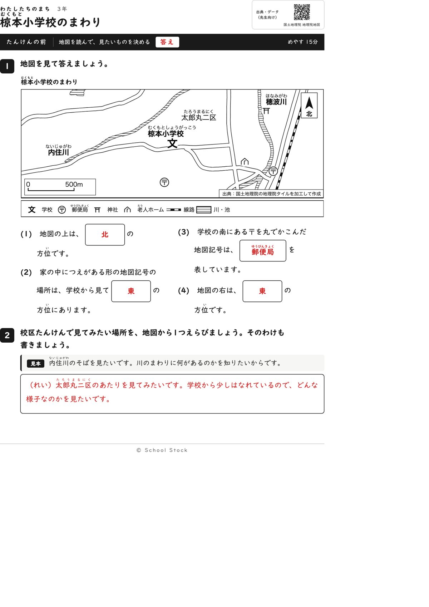
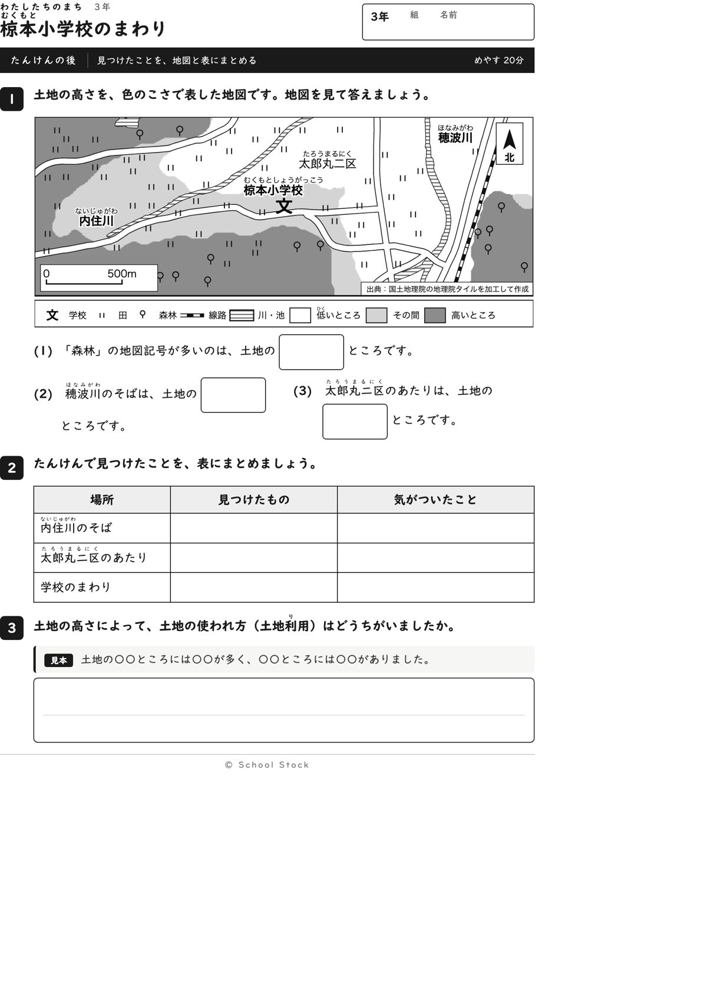
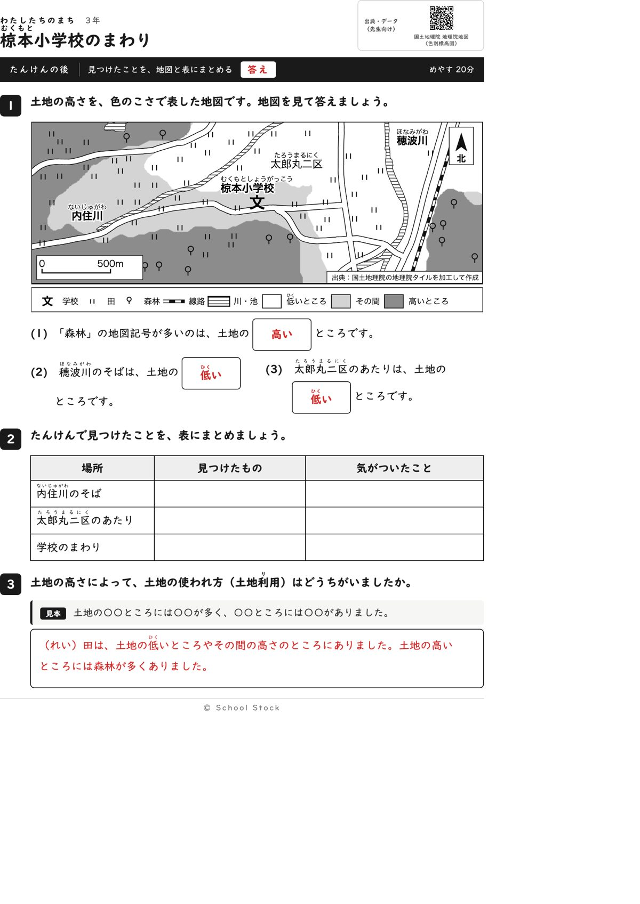
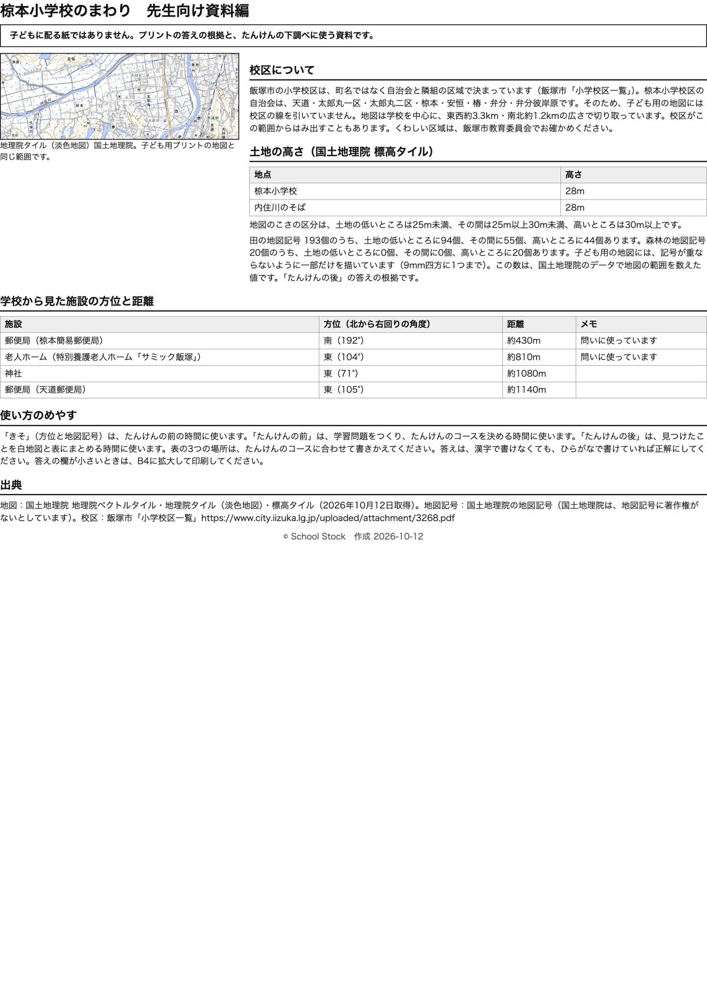

紙





直すところ
直すところはありません。
1回目のレビューで出た直し（1件・道具を直して作り直しました）
| 紙 | どこ | 何が困るか |
|---|---|---|
| 問いは3行以内で、ルビもあります。老人ホームの記号は『つえ』の絵が小さくて見えませんが、凡例に名前があるので探せます。たんけんの後の(3)は『何の色？』で止まりそうです。 |
専門家団の声（いまの紙を見て）
香月八重筆頭・全学年
三年の順序に合っています。方位を使って地図記号の場所を言う、が1文で言えます。老人ホームは教科書にも出てくる記号です。『後』の問いは『穂波川のそばは土地の□ところ』など場所で聞いていて、動けます。縮尺は白い地が敷かれ、『500m』が読めます。
日隈耕平社会
郵便局は南（192度）、老人ホームは東（104度）で、地図の位置と資料編が合っています。(3)の郵便局は2か所ありますが、問いは『学校の南』と決めているので答えは一つです。高さの区切り25mと30m、田193個、森林20個（すべて高いところ）も答えと合います。『太郎丸二区』のふりがなは『たろうまるにく』と読みがそろいました。学校の記号『文』は道の線に半分かかっていますが、読めます。
藤川湊すぐ終わる子
老人ホームの記号は小さいですが、凡例に同じ記号と名前があるので見つけられます。『後』の問いは場所が名指しなので、すぐ終わります。
田淵さくら例がないと止まる子
1番の(2)は『家の中につえがある形』と形を言っているので探せます。2番の見本があるので、場所を選ぶのも続けられます。『後』の三つの問いはどれも答えが二つのうちの一つなので、迷いません。
轟大和読む前に諦める子
『北』『郵便局』『東』は地図の字と記号を見れば答えが写せます。『後』の問いは短く、答えは『高い』『低い』のどちらかなので、書き始められます。